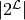

Problem Transformation¶
The skml.problem_transformation module implements so called
meta-estimators to solve multi-label classification problems by transforming
them into a number of easier problems, i.e. binary classification problems.
Binary Relevance¶
Binary Relevance (skml.problem_transformation.BinaryRelevance)
transforms a problem of multi-classification with labels
into a problem of binary classification problems, hence
trains classifiers that decide label-wise, if the example
that is currently being observed should have the label or not. (Dubbed PT-4 in
the cited paper.)
Note, that binary relevance is not capable of modeling label interdependence.
References:
| [1] | “Multi-Label Classification: An Overview.” Tsoumakas, Grigorios and Ioannis Katakis. in IJDWM 3 (2007): 1-13. |
Label Powerset¶
Label Powerset (skml.problem_transformation.LabelPowerset) transforms
a multi-class classification problem into one multi-class problem, where all
possible label combinations are used as classes. So each possible combination
of labels is turned into one class. If the underlying multi-label problem
operates on the label space with
labels, label powerset will train  classifiers, where
each one decides if the label combination should be assigned to an example.
Note, that while label powerset can model label interdependence, the computational feasibility can be reduced for a large number of labels, as the number of trained classifiers grows exponentially. (Dubbed PT-5 in the cited paper.)
References:
| [1] | “Multi-Label Classification: An Overview.” Tsoumakas, Grigorios and Ioannis Katakis. in IJDWM 3 (2007): 1-13. |
Classifier Chains¶
Classifier chains (skml.problem_transformation.ClassifierChain)
improve the binary relevance
(skml.problem_transformation.BinaryRelevance) method to use label
interdependence as well. For each label a classifier is trained. Besides the
first classifier in the chain, each subsequent classifier is trained on a
modified input vector, where the previous predicted labels are incorporated.
Thus, a chain of classifiers is predicted, and each classifier in the chain
gets also the previous class predictions as an input.
Note, that the performance of a single chain depends heavily on the order of the classifiers in the chain.
References:
| [2] | “Classifier chains for multi-label classification”, Read, J., Pfahringer, B., Holmes, G. & Frank, E. (2009). In Proceedings of European conference on Machine Learning and Knowledge Discovery in Databases 2009 (ECML PKDD 2009), Part II, LNAI 5782(pp. 254-269). Berlin: Springer. |
Probabilistic Classifier Chains¶
Probabilistic Classifier Chains
(skml.problem_transformation.ProbabilisticClassifierChain)
–also known as PCC–
are an extension to the classic Classifier Chains
(skml.problem_transformation.ClassifierChain)
and can be seen as a discrete greedy approximation of probabilistic classifier chains
with probabilities valued zero/one [3].
For each label a classifier is trained as in CC, however probabilistic classifiers are used. In fact [3], when used with non-probabilistic classifiers, CC is recovered from the posterior probability distribution .
Note, that PCC performs best, when a loss function that models label interdendence (such as Subset 0/1 loss) is used, and the labels in the data set are in fact interdependent. For more information on this, see [3].
The training is equivalent to CC, the inference (prediction) however is
more complex. For a detailed description of the inference, see
skml.problem_transformation.ProbabilisticClassifierChains directly,
have a look at the source code, or refer to the paper [3].
References:
| [3] | “Bayes Optimal Multilabel Classification via Probabilistic Classifier Chains”, K. Dembczynski, W. Cheng, E. Hüllermeier (2010). ICML 2010 |